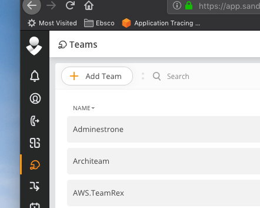

Observability¶
Tools Ecosystem¶
Interaction between the core observability tools in refarch1.5
Tools and Roles¶
| Tool | Role | Instrumentation needed in services? | |————– |————————————————————————————————————————————————————————————————————————————————————————————- |————————————————————————————————————————————————— | | Fluentd | collecting, filtering, buffering, and outputting logs from containers to logging backend | integrate with refarch1.5 observability pdk for appending custom tags and standardization of logging format | | Sumologic | managed logging platform - backend, visualization, analytics | none - integration provided by infrastructure pipeline | | Prometheus | metrics aggregation service & backend, data source for alerts and dashboards | none for OOTB metrics integrate with refarch1.5 observability pdk & add annotations in code if custom metrics are needed | | Grafana | metrics visualization via configurable dashboards | none for OOTB dashboards customization supported via modifications to json of default dashboards in source control | | Alertmanager | alert management platform for prometheus handling deduplicating, grouping, and routing them to the receiver integration (e.g., opsgenie) | none for OOTB alerts customization supported | | OpsGenie | alerting and on-call receiver/ management solution | none - integration provided by infrastructure pipeline | | Jaeger | distributed tracing system, to provide end-to-end visibility and method-level insights into service requests | integrate with refarch1.5 observability pdk to propagate trace context. if it is service that doesn’t make outbound calls then nothing is needed. | | Kiali | visualize the topology of the service mesh in real time to identify bottlenecks and understand how data flows through the cluster. Includes realtime service dependency graph, distributed tracing integration, metrics integration, health checks, config viewing/validation, etc. | none - integration will be provided by infrastructure pipeline (pi12 item) |
Index page for monitoring tools¶
Every cluster would come with an index page, which would contain links to the monitoring components for the Eks/Istio infrastructure and services.
Here’s a sample of what this looks like presently for the dev5 cluster:
- Links for ISTIO monitoring components
- Link to Kiali
- username/pwd: admin/admin
- Link to login to Sumologic
Opsgenie¶
Teams need to make sure they are added to Opsgenie to ensure delivery of alert notifications. Medusa will verify your team is configured in Opsgenie and will fail builds if your team is not found.
To add your team to OpsGenie:
- Log into Opsgenie:
- Sandbox: https://app.sandbox.opsgenie.com
- Live: https://app.opsgenie.com
- Select ‘Teams’ from the Opsgenie navigation menu
- Click the ‘Add Team’ button
- Fill in the details for your team and add your team members.
- Your team name will need to match the team name in your applicationDefinition.yaml file.
 Select 'Teams' from the Opsgenie navigation menu
Select 'Teams' from the Opsgenie navigation menu- Click the 'Add Team' button
- Fill in details
Further reading¶
Please see the Observability page on confluence for more details.